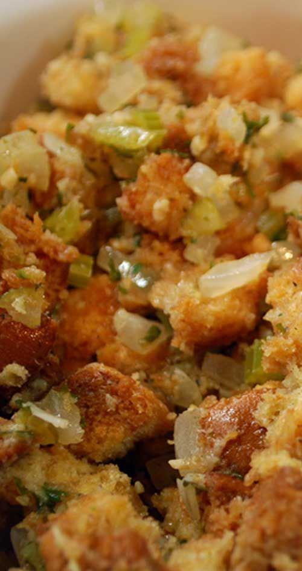

Homemade recipes
Stuffing Recipe
Ingredients
- 10 loafes White Bread
- 4-5 medium onions-chopped
- 3 teaspoons ground sage
- salt and pepper
- 3 cups Chicken Broth
Steps
- Rip apart bread into bite sized pieces and add to large bowl.
- Chop onions and add to bread.
- Mix together bread and onions and chicken broth.
- Place bread mixture into hot pan with a little bit of oil.
- Cook for 45 minutes or until brown and crisp.
- Add Ground sage and salt and pepper for taste and mix.
- Cook bread mixture in small or medium batches for faster cooking.
- Cool and serve.
